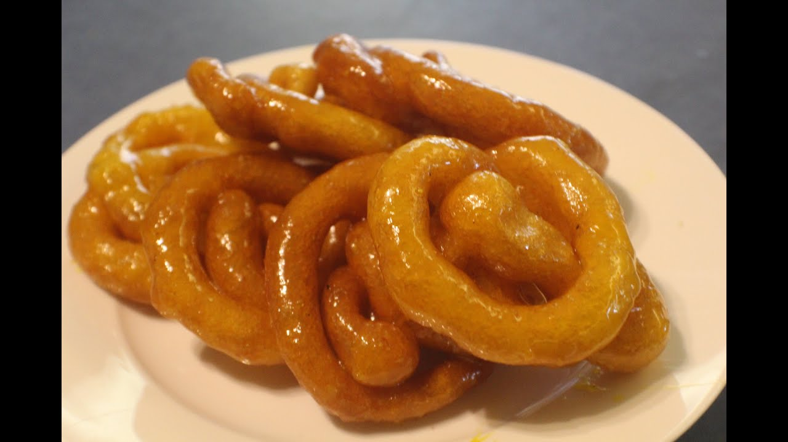

Uduwal
>
Ingredients
- 150g White lentils (Urad Dal/Ulundu)
- 150g Rice Flour
- Salt to Taste
- 1 cup Coconut Milk
- Coconut Oil for frying (Vegetable Oil can be used)
Cooking Instructions
- Soak white lentils in water overnight or for about 5-6 hours. Drain the water and grind to a thick mixture
Add the salt and the coconut milk and mix. The consistency of the batter should be about twice as thick as a pancake batter. You should be able to pipe the mixture through a piping bag. Do not make it watery
- Keep it aside for about 3 hours
To make the sugary syrup, mix the treacle, sugar, water and cinnamon in a saucepan over medium. Bring to a boil and simmer while stirring gently until it slightly thickens. Take off the heat.
- Heat the coconut oil in a frying pan. With the help of a piping bag, pipe the mixture into the oil in a circular motion(till you see a coiled shape) or as desired. Fry till golden brown.
- Take the fried coils out of the oil and add them straight into the sugar syrup. Let it soak in the syrup while coating it well. When you think they have absorbed enough, drain the excess syrup and serve